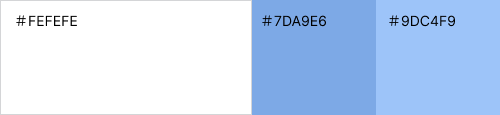
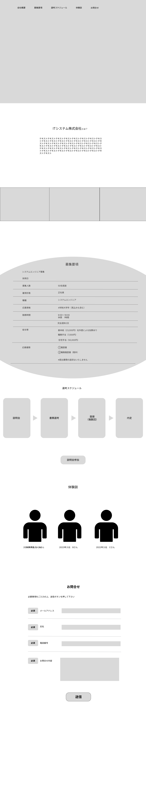
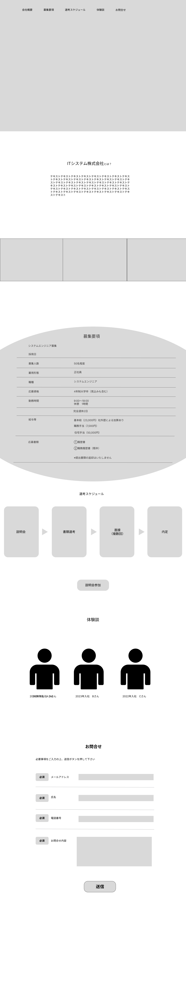

Work

IT企業のコーポレートサイト（架空サイト）
| 制作概要 | 採用に力を入れたいIT企業のコーポレートサイトを制作しました。求人だけではわからないところや先輩の実際の声を載せることでその企業で働くことをイメージしてもらいたいという思いで作りました。 |
| ターゲット | 就職活動中の大学生や転職活動中の方 |
| 目的 | 多くの人の目に留まるようにリクルートだけの独立したサイトを作る |
| 制作範囲・期間 | 企画・ワイヤーフレーム ２週間 デザイン ２週間 コーディング １ヶ月 |
| 使用ツール | Visual Studio Code/Figma |
| コンセプト | テーマ：就活生を応援するようなコーポレートサイト 採用情報を単調に乗せるだけでなく、就活生が頑張ろうと前向きになるようなサイトを目指しました。 |
| サイト構成 | 最初に会社の紹介をすることで会社概要を１番に理解していただきます。そして、募集要項を 簡潔に表にまとめました。先輩社員のインタビューを乗せることで実際に働いた時のイメージを 膨らませてもらいます。全体を見て疑問を解消できるように最後にお問い合わせフォームを作りました。 |
| デザイン | 爽やかな印象を持っていただけるように寒色系を使いまとめました。その中にも清潔感を取り入れるために メインは白を使いました。就活生に前向きなイメージを持ってもらうために明るい画像を取り入れました。 余白を十分に使い情報を整理しました。 |

 
